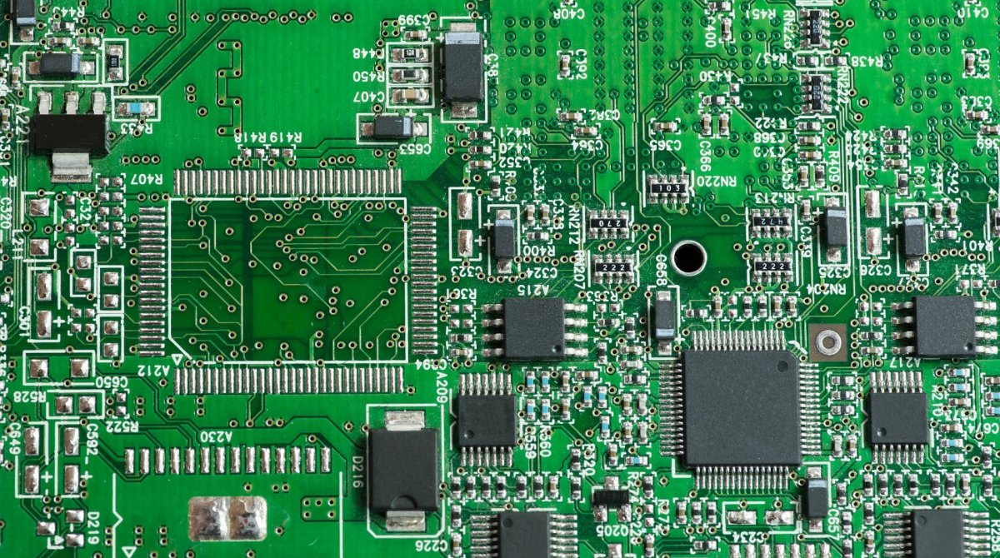

Elastyczność
Zdolność szybkiego podejmowania decyzji jest krytyczna we współczesnym biznesie. Nasze procesy decyzyjne są sprawne, bowiem jesteśmy prywatnym producentem kontraktowym. W połączeniu z możliwością wdrożenia solidnego modelu biznesowego, który uwzględnia m.in nieznany popyt na produkt i nieprzewidywalne zdarzenia, a jednocześnie minimalizuje nadmierne zakupy materiałów, mamy receptę na sukces.
Poprawienie Jakości
Nie da się kupić niemal 40-letniego doświadczenia w montażu elektroniki. W miarę pogłębiania doświadczenia powstają praktyczne, „życiowe” rozwiązania i rzetelność — zalety kluczowe dla sukcesu naszych klientów. Jakość produkcji jest bowiem największym atutem naszej firmy w oczach klientów.
Rozwiązania
Znajdujemy rozwiązania biznesowe opierając się na modelach planowania oraz kompetencjami inżynieryjnymi odpowiadających potrzebom segmentu rynkowego klienta, wyróżniających się znaczną elastycznością i umożliwiających realizację jego celów.
Zaufanie
Zaufanie jest podstawową wartością. Każda firma szuka partnera, który wywiązuje się z danego słowa. Tworzymy realistyczne i praktyczne rozwiązania, współpracując ściśle z naszymi klientami nad celami krytycznymi dla ich działalności. To podejście naprawdę działa. Zgodnie z najnowszymi ankietami 100% naszych klientów poleciłoby naszą firmę innym firmom.
Certyfikowany Partner
Certyfikacja przez podmioty niezależne jest zawsze obiektywnym i rzetelnym wskaźnikiem zdolności. Nasza firma wykonuje montaż zgodnie z normą IPC-A-610 (w klasie 2 i 3), a także dysponuje czterema certyfikatami ISO: zarządzania jakością (ISO 9001), zarządzania jakością wyrobów medycznych (ISO 13485), zarządzania środowiskowego (ISO 14001) oraz zarządzania ciągłością działania (ISO 22301).
Kompleksowość
Specjalizujemy się w montażu wysoce skomplikowanych podzespołów elektronicznych oraz integracji systemów elektromechanicznych dla odbiorców z wymagających branż. Niemal 40 lat doświadczenia w produkcji, tysiące wdrożonych produktów i miliony zmontowanych PCBA - to dowód, że staramy się pomagać klientom osiągać nawet najbardziej wymagające cele, gdy powierzają nam swoją produkcję.